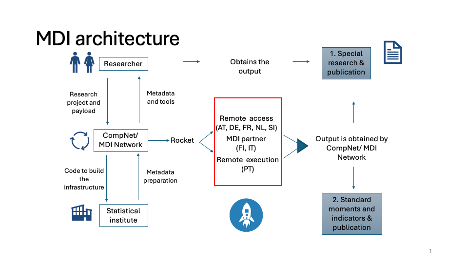
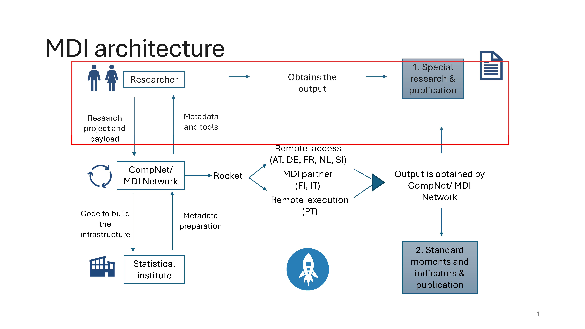

| Country | Type | Time | Cost |
|---|---|---|---|
| NL | Import code/ metadata | 1-2 days | free of charge |
| NL | Import data | 1-2 days | free of charge |
| NL | Export code/ metadata | 1-2 days | free of charge |
| NL | Light export results/ analysis | 1-2 days | 125 Euro |
| NL | Other export results/ analysis | 1-2 days | 250 Euro |
| SI | Import code/ metadata | 1 day | free of charge |
| SI | Import data | 1 day | free of charge |
| SI | Export code/ metadata | 20-30 days | free of charge |
| SI | Light export results/ analysis | 10-20 days | free of charge |
| SI | Other export results/ analysis | 10 days | free of charge |
| FR | Import code/ metadata | 1-2 days | free of charge |
| FR | Import data | 1-2 days | free of charge |
| FR | Export code/ metadata | 1-2 days | 318 Euro for a 10 unit output package |
| FR | Light export results/ analysis | 1-2 days | 318 Euro for a 10 unit output package |
| FR | Other export results/ analysis | 1-2 days | 318 Euro for a 10 unit output package |
| PT | Import code/ metadata | few days | free of charge |
| PT | Light export results/ analysis | few days | free of charge |
| PT | Other export results/ analysis | few days | free of charge |
| FI | Import code/ metadata | 2-3 days | free of charge |
| FI | Light export results/ analysis | 2-3 days | free of charge |
| FI | Other export results/ analysis | 2-3 days | free of charge |
| AT | Import files | 21-45 days | most cases 1h * 118 Euro |
| AT | Export files | 21-45 days | most cases 1h * 118 Euro |
MDI Users Guide
The never-finished manual of the Micro Data Infrastructure
Eric Bartelsman and MDI team ![]()
Overview of MDI

Introduction to MDI
Overview of MDI
The Microdata Infrastructure (MDI) is designed with the dual goal of harmonizing firm-level data across countries and simplifying the research process for conducting cross-country analysis for a wide variety of research “themes”. At its core, MDI offers a standardized environment where researchers can run identical analysis at multiple NSIs where the data are made comparable and accessible through a unified framework. The infrastructure supports a range of functionalities from data importation and harmonization to sophisticated analytical outputs, all within a controlled environment to maintain data confidentiality.
Stakeholders in the MDI Ecosystem
- National Statistical Institutes (NSIs) and other Partners
- NSI remote execution
- NSI remote access
- Partners with country-specific (remote) access
NSIs provide the underlying data and support remote execution and/or access to confidential firm-level data. They vary in legal access rules, available data, and technical setups but are the backbone of the standardized MDI research environment.
- Module writers (MDI users)
- Productivity Boards
- External Academic and Policy
- MDI ‘Theme’ research staff
MDI Users includes productivity boards, external academic and policy researchers, and MDI ‘Thematic’ research staff. They are responsible for creating research modules that leverage MDI’s capabilities for cross-country data analysis.
- MDI staff
- Country specialists
- Thematic research personnel
- Infrastructure support teams
MDI staff ensure the development and smooth operation of the MDI environment, assist NSIs in data preparation and documentation, and assist module writers (MDI Users) with knowledge of data, tools, and research themes.
Stakeholder NSI and Partners

The MDI at an NSI site
- NSIs differ in legal access rules and technical setup for research use of firm-level data. The MDI facilitates access by providing a one-stop method for researchers to run their analysis as
payloadin an MDI rocket in multiple countries. MDI staff negotiates access contracts with each NSI according to national rules. - NSIs differ in available data files (registers, surveys, administrative data sources) and specifications. The MDI provides researchers with a selection of micro-data (MD) panel datasets and variables that look identical across countries to computer code. The statistical and economic concepts are harmonized and the construction of the MD panels and variables from the underlying NSI sources are transparently documented.
- MDI metadata describe in each country the available files (surveys or register data), variables, and classification lists and are used to map all underlying data to the specification of harmonized MD firm-level panels
- At every NSI (including the
mock data site), the MDI environment looks the same to the code in therocketand itspayload - The rocket runs at the NSI in the MDI environment; reads data and metadata; and creates harmonized microdata (MD) panels.
- The `payload’ consists of research modules written in R with standardized tools and launch specific metadata. The payload code will generate statistical and analytical output in each country that can pass statistical disclosure. The output can therefore can be used for further cross-country analysis.
Importing to, and exporting from, the NSI site
- Whenever an import or export operation needs to be carried out from/to an environment, one should keep in mind how long it takes to do so and whether it involves a monetary cost
- The following table summarizes this information:
- In general, the files to be downloaded from MDI to the NSI, are stored in a TEAMS directory accessible to that NSI tema. The files are on the ‘download’ directory of a sharepoint file that you can share to your own machine, for example: “../OneDrive-SharedLibraries-IWHEconomicStudiesLab/MDI Data Providers Forum - PT”
- Each NSI also gets an MDI TEAMS directory ‘upload’ to upload output from the rocket.
Initial set-up of MDI at the NSI (launch_v2.x)
- For the first time using MDI, find a directory to place all the MDI files and subdirectories. The person setting up the MDI and running MDI
rocketsneed to have read and write access to the directories and their subdirectories - Install the four MDI directories–to be found on the MDI TEAMS cloud directory—under the main ‘root’ directory chosen for MDI:
- docs (documentation of the MDI system, including this MDI Manual)
- rocket (code to support and control MDI rocket launches, NSI metadata, auxilliary data)
- payload (Research modules, includes metadata: NSI-specific NSI_MD concordances)
- launchpad (NSI specific information to control MDI code and rocket launches)
- Make sure the user and the R programs have read access to the directory with raw data files
- Prepare a read/write directory for output files (pre-disclosure) create by the MDI R-code. After disclosure the files in this directory can be uploaded to the MDI TEAMS cloud directory available to the NSI staff.
- Fill in all the parameters needed in the file
launchpad/countdown.R, including paths to relevant directories.
The directories at the NSI site MDI installation
Files in /home/runner/work/MDI_testing/MDI_testing
.
├── docs
├── launchpad
├── mockdata
├── payload
└── rocketsubdirectories of docs (not shown here. MDI documentation)
directory launchpad (with files to launch MDI)
launchpad
├── README.md
├── countdown.R
├── countdown_JW.R
├── interactive_MDI.R
├── liftoff.R
├── pre_launch_checker.R
├── prepare_NSI.R
└── report_file_changes.Rsubdirectories of rocket (with code, and (meta)data to support MDI)
rocket
├── CompNet
├── MDIprogs
│ └── metadata_tools
├── NSImetadata
│ ├── AT
│ ├── DE
│ ├── FI
│ ├── FR
│ ├── NL
│ ├── Official
│ ├── PT
│ │ └── Other
│ └── SI
├── Rtools
│ ├── R
│ ├── Rpackages
│ └── man
├── auxdata
└── controlsubdirectories of payload (with analytical code and MD (meta)data)
payload
├── Launch_v2.0
│ ├── MDmetadata
│ │ ├── DE
│ │ ├── NL
│ │ └── SI
│ └── Rmodules
│ └── MP
└── Launch_v2.1
├── MDmetadata
│ ├── DE
│ ├── FI
│ ├── FR
│ ├── NL
│ ├── PT
│ └── SI
└── Rmodules
├── CN
├── EN
├── FD
│ └── auxdata
├── M0
├── MP
└── TCPreparing NSI metadata
- The NSI provides metadata of available firm-level data files.
- The NSI and MDI staff construct metadata to harmonize and link the raw files to the firm-level panel (MD) datasets, whose standards are described in the metadata of MD panels and variables provided by MDI.
- To aid in preparation of metadata, run
countdown.Rand choose programprepare_nsi.R(but not before filling out local information in the filelaunchpad/countdown.R). The preliminary metadata files are written to the dirOUTPUT directory and need to be editted. The instruction are given below in the section Metadata. The completed metadatafiles should be uploaed to the TEAMS directory and will, after processing and checking by the MDI team, be added to the NSImetadata directory for that country. The NSI can then download an updated version of the rocket, including the new metadata.
Launching the rocket and delivering output
When a new launch date is set, the NSI needs to download the latest version of the docs and rocket directories from the MDI Teams cloud site (if there are new versions available), and overwrite the old versions.
The new ‘payload’ subdirectory
launch_v2.xdirectory needs to be downloaded and placed under the payload directory of the main MDI root directory.The file
countdown.Rshould be copied to the user’s directory and edited. Runningcountdown.Rwill allow user to choose further path of execution.Two folders need to created (with no constraints on how to name them – they can be stored to a directory of preference to the user):
- Output folder
- Folder for temporary files
The following fields need to be manually specified, based on the directory system of the environment:
dirMDI: path to the MDI folderCountryCode: 2-letter ISO 3166 code of the country of referencedirINPUTDATA: path to the generic folder where the raw data is storeddirOUTPUT: path to the output folderdirTMPSAVE: path to the folder for temporary files- Disclosure parameters
MDIminNumObs: minimum number of firm-level observations underlying computation of cell of output fileMDIdomSh: maximum share of top X firms to meet dominance criterionMDIdomNr: the X in top X firms.
The program
pre_launch_checker.R(runcountdown.Rand choose this program) needs to be run before anything else. It performs various checks on the NSI metadata to avoid errors later on. The results of the checks can be found in the filepre_launch_checker_results.txtin the output directory. It shows possible errors that should be adjusted in the NSI metadata. Additionally, two concordance files (NSI_pcc8t0_pcc8t1_conc.csv and NSI_MD_nace_conc.csv) are created using existing concordance files and updating them with the data at the NSI. These concordance table might contain empty values, if no value was previously defined. Missing values need to be filled in manually. When the concordance files are ready to be used, they need to be moved to the directory indicated inpre_launch_checker_results.txtThe program
liftoff.R, chosen after runningcountdown.R, will run the MDI rocket and analytical modules. Iterations with the MDI staff may be needed for fixes and patches to the rocket and payload, until the final results are written to thedirOUTPUTdirectory.The files in
dirOUTPUTneed to be checked for disclosureThe files in
dirOUTPUTcan be uploaded to the MDI Teams upload directory.
Mechanics of countdown, liftoff, rocket, payload
- Copy
countdown.Rfrom MDI/launchpad/ to your own working directory. Fill in all parameters. - Run
countdown.Rand choose which program to run: - Run
pre_launch_checker.Rwhich you should run whenever a new version of the MDI system has been installed. It checks for consistency between NSI metadata known to MDI and the information in the data at the NSI site. - Run
liftoff.R, which calls control/rocket.Rrocket.Rcalls- load_MDIenvironment.R
- document_output.R (generates information to document details of launch and output files)
- read_MDmetadata.R
- read_NSImetadata.R (EB: _datafiles, maybe others….)
- read_auxdata.R (deflators for now, maybe WIOD, downstream, maybe these go in modules)
- read_firmdata.R (based on selectnames for all modules….)
- payload/launch_v2.x/run_modules.R executes the payload modules
- cleanup.R cleans up the environment
- Run
prepare_NSI.Rwhich sets up the NSI environment to generate metadata - Run
interactive_MDIwhich you should run whenever working with the MDI system (other than liftoff or prepare).
Specifications for the NSI Metadata
This section summarizes the structure and content of the NSI metadata files. Specifically the metadata documents, in a machine and human readable form, the available data files, the description of the rows of the file (units of observation), the name and description of the variables (columns) in each file, the valid values (class and domain) for that variable in each row. The following paragraphs provide guidance on preparing the country specific metadata files.
Once created, the NSI metadata files need to be uploaded to the TEAMS directory. After the NSI downloads the rocket, the metadata files of the NSI will be in the rocket/NSImetadata/*NSI*/ directory of the MDI infrastructure. The MDI program called pre_launch_checker.R, to be run whenever MDI is updated, will flag inconsistencies and other problems in the metadata.
There are various types of (human- and machince-readable) metadata files prepared by the NSI: 1. A file that lists the available NSI firm-level datafiles (_datafiles) 2. Files that document the variables and their descriptions for each raw datafile listed above (_varnames). 3. Files that map categorical answers to their description (_codebook). 4. Files that describe classification variables on the datasets (_class, e.g. industry or product codes).
Together with the MDI team, the NSI also creates metadata to aid in harmonizing the NSI data to the MD specification. The MDI team provides, possibly specific to each launch, the metadata describing the MD datasets and its variables. Further, the MDI team, together with the NSI, provide concordances that are used to harmonize the NSI data files to the common format.
In the filenames for the metadata, the acronym NSI is used. This should be substituted with the 2-letter country code for the country in question (using the ISO3166-2 standard, e.g. NSI = PT). For the MDI metadata, the two letters MD are used, and for the mock data test site, the letters TS are used.
1. List of NSI dataFiles – NSI_datafiles.csv
This file contains the list of all available raw data files on a country’s environment. The file has the following columns:
[1] NSI_dataset,NSI_datafile,yearvar,year_start,year_end,format,path,detailswhere,
NSI_datasetis the ‘generic’ name of the NSI datafileNSI_datafileis the name of the file in the NSI environmentyearvargives name of year variable ifNSI_datafileis a panel, empty otherwiseyear_startis the starting year of the data fileyear_endis the last year of the data file (if empty or NA, the file is a panel and includes a variable ‘year’)formatis the file extension (csv, sas, stata, etc) of the file (i.e. also the storage format of the data)pathindicates path of the datafile relative to the NSI data directory (given by the parameterdirINPUTDATAin launchpad/countdown.R)detailscontains additional notes on the file
An example (for NSI=FI, 2018) of the metadata for the raw data files (the columns yearvar, year_end, path and details are omitted for viewing):
| NSI_dataset | NSI_datafile | year_start | format |
|---|---|---|---|
| bd | bd2018 | 2018 | csv |
| br | br2018 | 2018 | csv |
| bs | bs2018 | 2018 | csv |
| cis | cis2018 | 2018 | csv |
| ifats | ifats2018 | 2018 | csv |
| itgs | itgs2018 | 2018 | csv |
| its | its2018 | 2018 | csv |
| ofats | ofats2018 | 2018 | csv |
| prodcom | prodcom2018 | 2018 | csv |
| sbs | sbs2018 | 2018 | csv |
| ictec | ictec2018 | 2018 | csv |
2. File-specific metadata – NSI_varnames.csv
This file contain the list of all variables in each raw datafile appearing in the column NSI_datafile of NSI_datafiles.csv. Each file has the following columns:
[1] NSI_datafile,NSI_varname,is_key,description,class,domainwhere
NSI_datafileis the name of the file in the NSI environmentNSI_varnameis the name (hopefully mnemonic) of the variable in the raw fileis_keyis a boolean stating whether variable belongs to the (possibly joint) unique keys of the datafile, e.g.firmid, orfirmid,yearare often the unique key(s).descriptioncontains a description of the variable, if possible using Eurostat conventionclassis the type of value that the variable holds (e.g. numeric, date, character, logical)domainprovides information on the values of the variable. See examples below:- classification: e.g. list of industry, region, product or codes. (values is metadata filename: e.g. NSI_classname_class.csv, which provides a list of permissible values and descriptions)
- file-specific codebook of categorical answers. (value is metadata filename, e.g. *NSI_codebook.csv containing permissible values, such as ‘yes’, ‘no’,‘maybe’, or ‘small’, ‘large’, ‘medium’.
- For other values:
- For monetary values, “1000” (for 1000 Euros)
- For dates: “%m%d%Y” (R date-format for mmddyyyy). For ‘year’ variable, we use “%Y”
- For real units, choose from: “ton” (weight, 1000kg), “m3” (volume), “GJ” (energy), “unit” (1 item).
Domain: Expenditures, Quantities, Dates
| Measure | Domain Entry | Description |
|---|---|---|
| Expenditure | 1000 | … or 1 Euro; 10000000 Euro; etc. |
| Foreign currency | 1*FXC | … or 1000 etc.; Where FXC is an ISO 4217 3-letter currency code |
| Employment | 1 | 1 here refers to 1 FTE; or 1000; … or 1 Emp if in persons |
| Numerical | 1 | 1 here refers to 1 unit; … or 10; 100; where ‘unit’ gives unit in lowercase for the variable in the NSI data file |
| Date | %Y-%m-%d | Use the R date format that matches the values for the NSI date or year variable |
Here is an abbreviated list of R date formats:
| Format | Description | Example |
|---|---|---|
| %a | Abbreviated weekday | Sun, Thu |
| %A | Full weekday | Sunday, Thursday |
| %b or %h | Abbreviated month | May, Jul |
| %B | Full month | May, July |
| %d | Day of the month 01-31 | 27, 07 |
| %j | Day of the year 001-366 | 148, 188 |
| %m | Month 01-12 | 05, 07 |
| %U | Week 01-53, (start Sunday) | 22, 27 |
| %w | Weekday 0-6 (Sunday= 0) | 0, 4 |
| %W | Week 00-53 (start Monday) | 21, 27 |
| %x | Date, locale-specific | |
| %y | Year 2-digit 00-99 | 84, 05 |
| %Y | Year 4-dig: (69 to 99 - 19xx) | 1984, 2005 |
| %C | Century | 19, 20 |
| %D | Date formatted %m/%d/%y | 05/27/84, 07/07/05 |
| %u | Weekday 1-7 (Monday=1 | 7, 4 |
Domain: Classification or Categorical (factor) variables
| Variable | Domain_Entry | Description |
|---|---|---|
| Classification variable | NSI_classname_class | An (official) list, ie NL_nace |
| Categorical variable | NSI_codebook | Contains permissible values for categorical (factor) variables, e.g. ‘yes’, ‘no’,‘maybe’ |
Example: Netherlands (SBS, 2018): NL_varnames.
| NSI_datafile | NSI_varname | is_key | description | class | domain |
|---|---|---|---|---|---|
| sbs2018 | ent_id | 1 | Enterprise ID (identification | character | |
| sbs2018 | sbs_12110 | 0 | Turnover | numeric | 1000 |
| sbs2018 | sbs_12150 | 0 | Value added at factor cost | numeric | 1000 |
| sbs2018 | sbs_12170 | 0 | Gross operating surplus | numeric | 1000 |
| sbs2018 | sbs_13110 | 0 | Total purchases of goods and s | numeric | 1000 |
| sbs2018 | sbs_13310 | 0 | Personnel costs | numeric | 1000 |
| sbs2018 | sbs_13320 | 0 | Wages and salaries | numeric | 1000 |
| sbs2018 | sbs_15110 | 0 | Gross investment in tangible g | numeric | 1000 |
| sbs2018 | sbs_15150 | 0 | Gross investment in machinery | numeric | 1000 |
| sbs2018 | sbs_15429 | 0 | Gross investment in concession | numeric | 1000 |
| sbs2018 | sbs_15441 | 0 | Investment in purchased softwa | numeric | 1000 |
| sbs2018 | sbs_16110 | 0 | Number of persons employed | numeric | 1 |
| sbs2018 | sbs_16130 | 0 | Number of employees | numeric | 1 |
| sbs2018 | sbs_16140 | 0 | Number of employees in full-ti | numeric | 1 |
| sbs2018 | sbs_20110 | 0 | Purchases of energy products ( | numeric | 1000 |
| sbs2018 | sbs_22110 | 0 | Total intra-mural R & D expend | numeric | 1000 |
| sbs2018 | sbs_22120 | 0 | Total number of R & D personne | numeric | 1000 |
| sbs2018 | sbs_type | 0 | Code to show if data (unit) is | numeric | NL_codebook |
3. Codebook for categorical variables – NSI_codebook.csv
This file contains the possible values of a categorical variable and the description that belongs to that value. There rows give the possible values occuring in firm data for a particular NSI_datailfe and NSI_varname. The name of the codebook should be given in the ‘domain’ columnn of NSI_varnames for the relevant categorical variable.
[1] NSI_dataset,NSI_varname,year,code,description[NSI_datafile,NSI_varname, year, code , description ]
where,
NSI_datasetis the name of the generic dataset in the NSI environmentNSI_varnameis the name of the variable of that specific raw datasetyearis the year for which codebook values hold. If empty, holds for all years of the NSI datasetcodegives all the values of the categorical variable that occur for thatNSI_varnamein thatNSI_datafiledescriptiongives the description explaining each code value
An example below of the values occuring for the unit of measurement in the SI ENER data for 2012.
| NSI_dataset | year | NSI_varname | code | description |
|---|---|---|---|---|
| MIKRO_INDL_razST | NA | ME | 1000 SIT | thousands of slovenian tolars |
| MIKRO_INDL_razST | NA | ME | EUR | euros |
| MIKRO_INDL_razST | NA | ME | GJ | Gigajoule - a unit of energy |
| MIKRO_INDL_razST | NA | ME | MWh | Megawatt-hour - a unit of energy |
| MIKRO_INDL_razST | NA | ME | TJ | terajoules |
| MIKRO_INDL_razST | NA | ME | kW | kilowatts |
| MIKRO_INDL_razST | NA | ME | kg | Kilogram - a unit of mass |
| MIKRO_INDL_razST | NA | ME | kg N | kilograms of nitrogen |
| MIKRO_INDL_razST | NA | ME | kg P2O5 | Kilogram of Phosphorus Pentoxide - a measure for fertilizers |
| MIKRO_INDL_razST | NA | ME | kg akt. subst. | Kilogram Active Substance - a measure of active ingredient |
| MIKRO_INDL_razST | NA | ME | kg akt.subst | Kilogram Active Substance - a measure of active ingredient |
| MIKRO_INDL_razST | NA | ME | kg efekt. | Kilogram Effective - likely a measure of effective substance |
| MIKRO_INDL_razST | NA | ME | kos | Cost - possibly referring to cost in monetary terms |
| MIKRO_INDL_razST | NA | ME | l | Liter - a unit of volume |
| MIKRO_INDL_razST | NA | ME | l alc 100% | Liter Alcohol 100% - pure alcohol volume |
| MIKRO_INDL_razST | NA | ME | m | Meter - a unit of length |
| MIKRO_INDL_razST | NA | ME | m2 | Square Meter - a unit of area |
| MIKRO_INDL_razST | NA | ME | m3 | Cubic Meter - a unit of volume |
| MIKRO_INDL_razST | NA | ME | par | Pair - possibly referring to a set of two items |
| MIKRO_INDL_razST | NA | ME | t | Ton - a unit of mass |
| MIKRO_INDL_razST | NA | ME | tiso_ SIT | thousands of slovenian tolars |
| MIKRO_INDL_razST | NA | ME | tiso_ ef.ur | Thousand Effective Hours - likely referring to time or work hours |
| MIKRO_INDL_razST | NA | ME | tisoč SIT | Thousand Slovenian Tolars - currency unit (SIT was the Slovenian Tolar) |
| MIKRO_INDL_razST | NA | ME | tisoč ef.ur | Thousand Effective Hours - likely referring to time or work hours |
4. Classification lists – NSI_classvar_class.csv
This file contains the unique list of codes per year of a specific classification variable in a country. Note that there should be a list for every categorical variable in each dataset. The related table has the following columns:
[1] code,year,descriptionwhere,
codeis the list values of the classification variable observed in the datayearis the related yeardescriptiongives the description for each code value
An sample of rows from the table of NACE codes (in this case the official EU NaceR2 classification):
| code | description |
|---|---|
| C10 | __Manufacture of food products |
| C10.1 | ___Processing and preserving of meat and production of meat products |
| C10.1.1 | ____Processing and preserving of meat |
| C10.1.2 | ____Processing and preserving of poultry meat |
| C10.1.3 | ____Production of meat and poultry meat products |
| C10.2 | ___Processing and preserving of fish, crustaceans and molluscs |
| C10.2.0 | ____Processing and preserving of fish, crustaceans and molluscs |
| C10.3 | ___Processing and preserving of fruit and vegetables |
| C10.3.1 | ____Processing and preserving of potatoes |
| C10.3.2 | ____Manufacture of fruit and vegetable juice |
| C10.3.9 | ____Other processing and preserving of fruit and vegetables |
| C10.4 | ___Manufacture of vegetable and animal oils and fats |
| C10.4.1 | ____Manufacture of oils and fats |
| C10.4.2 | ____Manufacture of margarine and similar edible fats |
| C10.5 | ___Manufacture of dairy products |
| C10.5.1 | ____Operation of dairies and cheese making |
| C10.5.2 | ____Manufacture of ice cream |
| C10.6 | ___Manufacture of grain mill products, starches and starch products |
| C10.6.1 | ____Manufacture of grain mill products |
| C10.6.2 | ____Manufacture of starches and starch products |
5. Time concordances for classifications – NSI_classvart0_classvart1_timeconc.csv
This file contains the a concordance table for classification lists between a code at time t-1 and the corresponding code at t. The reference year is indicated in column year. In other words, t=year.
[1] left,right,yearwhere,
leftis the code at timet-1rightis the value(s) the code in columnleftcan take at timetyearis the reference year
For example, the following table displays how such table looks like for a subset of ITGS codes in PT:
| left | right | year |
|---|---|---|
| 8701 20 10 | 8701 29 00 | 2021 |
| 8462 41 10 | 8462 61 10 | 2021 |
| 22042180 | 22042198 | 2009 |
| 88052990 | 88052900 | 2005 |
| 72133910 | 72139910 | 1995 |
| 85291085 | 85177019 | 2006 |
| 0304 49 90 | 0304 47 10 | 2016 |
| 90328190 | 90328100 | 2005 |
| 1021000 | 1021090 | 1992 |
| 73066090 | 73066099 | 2003 |
| 29163300 | 29163390 | 1993 |
| 84439090 | 84439005 | 1997 |
| 72085299 | 72085280 | 2003 |
| 4081190 | 4081120 | 1993 |
| 85242110 | 85244010 | 1995 |
Specifications for the MD Metadata
- Work in this section is a collaboration between NSI and MDI staff
- In an iterative process, using NSI metadata for each country, and taking into account research needs of MD users, a specification is made of the MD panels and variables.
- MD_datafiles.csv describe the harmonized panel datasets generated in each launch
- MD_varnames.csv describe the variables per dataset, with their description, class, and domain.
- MD classifications: versions of official classifications, such as EU NaceR2 activities or NUTS2 regions
- MD codebooks: valid values for categorical variables
1. List of micro-dataset (MD) panels – MD_datafiles.csv
This file contains the list of all firm-level MD panels generated by the MDI code and usable by researchers via code modules. The file has following columns:
This file contains the list of all harmonized firm-level micro data panels (MD datafiles) that can be used in research by code in an MDI launch, either individually, or linked at the firm-year level.
[1] MD_dataset,description,detailswhere,
MD_datasetis the name of the MD panel (R data.table) at runtime of the launchdescriptionA description of the panel and its underlying source datadetailscontains additional notes on the file
Below is the list of currently available MD panels:
| MD_dataset | description | details |
|---|---|---|
| BR | Business Register | see: https://ec.europa.eu/eurostat/ |
| BS | Balance Sheet | Balance Sheet on Enterprise groups |
| BD | Business Dynamics | |
| SBS | Structural Business Statistics | |
| CIS | Community Innovation Survey | (only available in even numbered ye |
| ICTEC | ICT Usage in Enterprises Survey | https://ec.europa.eu/eurostat/cache |
| ITGS | International Trade in Goods | |
| ITS | International Trade in Services | |
| OFATS | Outgoing Foreign Affiliates Statist | |
| IFATS | Incoming Foreign Affiliates Statsti | |
| ENER | Energy Use at Firms | in progress harmonization across co |
| PRODCOM | Production Communitaire by firm and | https://ec.europa.eu/eurostat/web/p |
2. Micro-dataset (MD) variables – MD_varnames.csv
This file contains the list of all variables available in all the MD firm-level panel datsets that have been generated by the MDI code using the NSI datafiles, NSI metadata, and the NSI-MD concordances. The file has the following columns:
[1] MD_varname,MD_dataset,is_key,description,class,domainwhere
MD_datasetis the name of the MD firm-level panel dataset, ie BR, SBS, etc.MD_varnameis the name of the variable in the virtual firm-level datasetis_keyis a boolean stating whether variable belongs to the (possibly joint) unique keys of the dataset, e.g.firmid, orfirmid,yearare often the unique key(s).descriptioncontains a description of the variable, if possible using Eurostat conventionclassis the type of value that the variable holds (e.g. integer, character, boolean etc.)domain- classification: e.g. list of industry, region, product or codes. (values is metadata filename: e.g. MD_filename_varname_list.csv, which provides a list of permissible values and descriptions)
- MD-specific codebook of categorical answers. (value is metadata filename, e.g. MD_codebookname_codes.csv containing permissible values, such as ‘yes’, ‘no’,‘maybe’
- For other values:
- For monetary values, “1000” (for 1000 Euros)
- For dates: “%m%d%Y” (R date-format for mmddyyyy). For ‘year’ variable, we use “%Y”
- For real units, choose from: “ton” (weight, 1000kg), “m3” (volume), “GJ” (energy), “unit” (1 item).
Domain: Expenditures, Quantities, Dates
| Measure | Domain_Entry | Description |
|---|---|---|
| Expenditure | 1000 Euro | |
| Employment | 1 FTE | … or 1 Emp if in persons |
| Numerical | 1 ‘unit’ | ‘Unit’ gives unit used in NSI data file, or is left blank if just a count. |
| Date | %Y | For now, we use a R format for 4-digit year as the date variable |
| Weight | 1 kg | |
| Volume | 1 m3 | |
| Area | 1 m2 | |
| Length | 1 m | |
| Energy | 1 GJ | GigaJoule |
Domain: Classification or Categorical (factor) variables
| Variable | Domain_Entry | Description |
|---|---|---|
| Classification variable | NSI_classname_class | An (official) list, ie NL_nace |
| Categorical variable | NSI_codebook | Contains permissible values for categorical (factor) variables, e.g. ‘yes’, ‘no’,‘maybe’ |
Below is a random sample of 20 rows of the file MD_varnames with harmonized MD variables
| MD_dataset | MD_varname | description | domain |
|---|---|---|---|
| ICTEC | EMPCUSEPCT | % of workers using comput | 1 |
| BS | total_asse | sum of current and fixed | 1000 |
| BS | intangible | intangible fixed assets a | 1000 |
| BR | persons_br | Number of persons employe | 1 |
| BS | year | Year | %Y |
| CIS | year | Year | %Y |
| BS | cash_flow | Cash flow from operating | 1000 |
| ICTEC | imputed | Observed (0) or imputed ( | |
| BS | other_curr | all current liabilities, | 1000 |
| CIS | orgbup | New business practices fo | |
| OFATS | ctry | Host country of affiliate | MDiso3166-2_class |
| ICTEC | RBTS | Use service robots | |
| CIS | turnmar | % of turnover in new or i | 1 |
| ICTEC | SM1_ANY | Use any social media | |
| CIS | inpssu | Introduced onto the marke | |
| ICTEC | BROAD | Firm has broadband | |
| ICTEC | ADEGOV | Use of ADE for sending or | |
| SBS | emp | Number of employees | 1 |
| OFATS | entgrp | Unique enterprise group I | |
| ICTEC | AEBVALPCT | % of orders through inter | MD_codebook |
3. Classification lists – MD_classvar_class.csv
This file contains the unique list of codes per year of a specific classification variable from the MD panels. Note that there should be a list for every categorical variable in each MD datasets. The related table has the following columns:
[code , description ]
where,
codeis the list values of the classification variable observed in the datadescriptiongives the description for each code value
An example of the table for NACE codes (in this case the official EU NaceR2 classification):
| code | description |
|---|---|
| C17.2.2 | ____Manufacture of household and sanitary goods and of toilet requisit |
| C17.2.3 | ____Manufacture of paper stationery |
| C17.2.4 | ____Manufacture of wallpaper |
| C17.2.9 | ____Manufacture of other articles of paper and paperboard |
| C18 | __Printing and reproduction of recorded media |
| C18.1 | ___Printing and service activities related to printing |
| C18.1.1 | ____Printing of newspapers |
| C18.1.2 | ____Other printing |
| C18.1.3 | ____Pre-press and pre-media services |
| C18.1.4 | ____Binding and related services |
| C18.2 | ___Reproduction of recorded media |
| C18.2.0 | ____Reproduction of recorded media |
| C19 | __Manufacture of coke and refined petroleum products |
| C19.1 | ___Manufacture of coke oven products |
| C19.1.0 | ____Manufacture of coke oven products |
| C19.2 | ___Manufacture of refined petroleum products |
| C19.2.0 | ____Manufacture of refined petroleum products |
| C20 | __Manufacture of chemicals and chemical products |
| C20.1 | ___Manufacture of basic chemicals, fertilisers and nitrogen compounds, |
| C20.1.1 | ____Manufacture of industrial gases |
4. Hierarchy files for classifications – MD_classvar_hier.csv
This file contains a series of columns that refer to different nodes of the classification variable in question. With this file, the user can easily aggregate or disaggregate the data based on the different nodes of the classification variable.
The columns of the file are labelled as h_X, where X is a number from 0 to N denoting one of the N available nodes in the variable.
An example of a hierarchy table for NACE codes (in this case the official EU NaceR2 classification):
| h_0 | h_1 | h_2 | h_3 | h_4 |
|---|---|---|---|---|
| 6831 | 683 | 68 | L | TOT |
| 7220 | 722 | 72 | M | TOT |
| 2895 | 289 | 28 | C | TOT |
| 9491 | 949 | 94 | S | TOT |
| 5510 | 551 | 55 | I | TOT |
| 7990 | 799 | 79 | N | TOT |
| 3521 | 352 | 35 | D | TOT |
| 4637 | 463 | 46 | G | TOT |
| 6612 | 661 | 66 | K | TOT |
| 4730 | 473 | 47 | G | TOT |
| 8520 | 852 | 85 | P | TOT |
| 6010 | 601 | 60 | J | TOT |
| 142 | 14 | 1 | A | TOT |
| 121 | 12 | 1 | A | TOT |
| 4724 | 472 | 47 | G | TOT |
5. Codebook for categorical variables – MD_codebook.csv
This file contains the possible values of a categorical variable and the description that belongs to that value. Note that sometimes a particular codebook is ‘re-used’ for multiple variables. The name of the codebook should be given in the ‘domain’ columnn of the metadata for the file containing the categorical variable.
[MD_dataset,MD_varname, code , description ]
where,
MD_datasetis the name of the MD firm-level panel dataset, ie BR, SBS, etc.MD_varnameis the name of the variable of that specific MD datasetcodegives the valid values of the ccategorical variabledescriptiongives the description for each code value
An example below of the values given for some variables in the MD br business register dataset
| MD_dataset | MD_varname | code | description |
|---|---|---|---|
| BD | status | 1 | born in reference year |
| BD | status | 2 | active entire reference year |
| BD | status | 3 | dead in reference year |
| BD | status | 4 | born and dead in reference year |
| BR | demo | 0 | ”No demographic relation in ref. year” |
| BR | demo | 1 | ”Receiving employment from other enterprise in ref. year” |
| BR | demo | 2 | ”Transfers employment to other enterprise and cease to exist |
| BR | demo | 3 | ” Transfers employment to other enterprise and continues in |
| BR | lfo | LL | Limited liability company - include limited liability partne |
| BR | lfo | SP | Sole Proprietor |
| BR | lfo | PA | Partnership - exclude limited liability partnerships |
| BR | lfo | GO | Government - local and central government - exclude public c |
| BR | lfo | NB | Non profit body or mutual association |
| BR | lfo | NP | Natural person(s) - if economically active, code as sole pro |
| BR | lfo | ND | Not defined |
| BR | soe | 1 | private |
| BR | soe | 2 | public |
| BR | soe | 9 | not available |
| BR | soe | missing | |
| ICTEC | aebvalpct | 1 | Less than 1% |
| ICTEC | aebvalpct | 2 | 1% or more and less than 5% |
| ICTEC | aebvalpct | 3 | 5% or more and less than 10% |
| ICTEC | aebvalpct | 4 | 10% or more and less than 25% |
| ICTEC | aebvalpct | 5 | 25% or more and less than 50% |
| ICTEC | aebvalpct | 6 | 50% or more and less than 75% |
| ICTEC | aebvalpct | 7 | 75% or more |
| ICTEC | aebvalpct | 9 | not applicable |
| ICTEC | aebvalpct | no answer | |
| ITGS | ctrygrp | 1 | EU-15 |
| ITGS | ctrygrp | 2 | EU-13 |
| ITGS | ctrygrp | 3 | Other Europe |
| ITGS | ctrygrp | 4 | Russia |
| ITGS | ctrygrp | 5 | China |
| ITGS | ctrygrp | 6 | Japan |
| ITGS | ctrygrp | 7 | India |
| ITGS | ctrygrp | 8 | Brazil |
| ITGS | ctrygrp | 9 | USA |
| ITGS | ctrygrp | 10 | Canada & Mexico |
| ITGS | ctrygrp | 11 | Oceania & Rest of Asia |
| ITGS | ctrygrp | 12 | Central Am. & Rest of South Am. |
| ITGS | ctrygrp | 13 | Africa |
| ITGS | ctrygrp | 14 | Unknown |
| ITGS | ctrygrp | 15 | Other |
| ITS | ctrygrp | 1 | EU-15 |
| ITS | ctrygrp | 2 | EU-13 |
| ITS | ctrygrp | 3 | Other Europe |
| ITS | ctrygrp | 4 | Russia |
| ITS | ctrygrp | 5 | China |
| ITS | ctrygrp | 6 | Japan |
| ITS | ctrygrp | 7 | India |
| ITS | ctrygrp | 8 | Brazil |
| ITS | ctrygrp | 9 | USA |
| ITS | ctrygrp | 10 | Canada & Mexico |
| ITS | ctrygrp | 11 | Oceania & Rest of Asia |
| ITS | ctrygrp | 12 | Central Am. & Rest of South Am. |
| ITS | ctrygrp | 13 | Africa |
| ITS | ctrygrp | 14 | Unknown |
| ITS | ctrygrp | 15 | Other |
| OFATS | ctrygrp | 1 | EU-15 |
| OFATS | ctrygrp | 2 | EU-13 |
| OFATS | ctrygrp | 3 | Other Europe |
| OFATS | ctrygrp | 4 | Russia |
| OFATS | ctrygrp | 5 | China |
| OFATS | ctrygrp | 6 | Japan |
| OFATS | ctrygrp | 7 | India |
| OFATS | ctrygrp | 8 | Brazil |
| OFATS | ctrygrp | 9 | USA |
| OFATS | ctrygrp | 10 | Canada & Mexico |
| OFATS | ctrygrp | 11 | Oceania & Rest of Asia |
| OFATS | ctrygrp | 12 | Central Am. & Rest of South Am. |
| OFATS | ctrygrp | 13 | Africa |
| OFATS | ctrygrp | 14 | Unknown |
| OFATS | ctrygrp | 15 | Other |
| ITS | bus | 10 | Distribution, logistics |
| ITS | bus | 11 | Marketing, sales, etc. |
| ITS | bus | 12 | ICT and telecom. |
| ITS | bus | 13 | Adm., management |
| ITS | bus | 14 | R&D, engineering |
| ITS | bus | 15 | Other support functions |
| ITS | bus | 16 | Royalties and licens fees |
| ITS | bus | 17 | Other |
| PRODCOM | unit | 1000 EUR | 1000 euro |
| PRODCOM | unit | 1 GJ | Gigajoule - a unit of energy |
| PRODCOM | unit | 1 MWh | Megawatt-hour - a unit of energy |
| PRODCOM | unit | 1 TJ | terajoules |
| PRODCOM | unit | 1 kW | kilowatts |
| PRODCOM | unit | 1 kg | Kilogram - a unit of mass |
| PRODCOM | unit | 1 kg N | kilograms of nitrogen |
| PRODCOM | unit | 1 kg P2O5 | Kilogram of Phosphorus Pentoxide - a measure for fertilizers |
| PRODCOM | unit | 1 kg act. subst. | Kilogram Active Substance - a measure of active ingredient |
| PRODCOM | unit | 1 kg efekt. | Kilogram Effective - likely a measure of effective substance |
| PRODCOM | unit | 1 l | Liter - a unit of volume |
| PRODCOM | unit | 1 l alc 100% | Liter Alcohol 100% - pure alcohol volume |
| PRODCOM | unit | 1 m | Meter - a unit of length |
| PRODCOM | unit | 1 m2 | Square Meter - a unit of area |
| PRODCOM | unit | 1 m3 | Cubic Meter - a unit of volume |
| PRODCOM | unit | 1 pair | Pair - possibly referring to a set of two items |
| PRODCOM | unit | 1 t | Ton - a unit of mass |
| PRODCOM | unit | 1000 eff. work hrs. | Thousand Effective Hours - likely referring to time or work |
| PRODCOM | unit | 1 piece | Number of pieces |
| PRODCOM | unit | 1 gWh | Gigawatt-hour |
| PRODCOM | unit | 1 kWh | Kilowatt-hour |
| PRODCOM | unit | gross tonnage | gross tonnage |
| PRODCOM | unit | 1 km | Kilometres |
| PRODCOM | unit | 1 m linear | Linear metres |
| PRODCOM | unit | number of steps | Number of steps |
| PRODCOM | unit | 1 piece | pieces |
| PRODCOM | unit | 1 paper roll | Paper rolls |
| PRODCOM | unit | number | Number |
| PRODCOM | unit | 1000 pieces | Thousands of pieces |
| PRODCOM | unit | 1 carat | carats |
| PRODCOM | unit | 1000 m2 | Thousands of squared metres |
| PRODCOM | unit | 1000 m3 | Thousands of cubic metres |
| PRODCOM | unit | 1 ml | Millilitres |
| PRODCOM | unit | 1 t SiO2 | Tons of silicon dioxide |
| PRODCOM | unit | 1 kg 90% dry | Kilogram of substance 90% dry |
| PRODCOM | unit | 1 Kg H2SO4 | Kilogram of sulfuric acid |
| PRODCOM | unit | 1 g | Grams |
| PRODCOM | unit | 1 t N | Tons of nitrogen |
| PRODCOM | unit | 1 t K2O | Tons of potassium oxide |
| PRODCOM | unit | 1 t P2O5 | Tons of diphosphorus pentoxide |
| PRODCOM | unit | 1 t TiO2 | Tons of titanium dioxide |
| PRODCOM | unit | 1 t Al2O3 | Tons of dialuminium trioxide |
| PRODCOM | unit | 1 t B2O3 | Tons of diboron trioxide |
| PRODCOM | unit | 1 t Cl | Tons of chlorine |
| PRODCOM | unit | 1 t F | Tons of fluorine |
| PRODCOM | unit | 1 t HCl | Tons of hydrochloric acid |
| PRODCOM | unit | 1 t HF | Tons of hydrofluoric acid |
| PRODCOM | unit | 1 t H2O2 | Tons of hydrogen peroxide |
| PRODCOM | unit | 1 t KOH | Tons of potassium hydroxide (caustic potash) |
| PRODCOM | unit | 1 t NaOH | Tons of sodium hydroxide (caustic soda) |
| PRODCOM | unit | 1 t Na2CO3 | Tons of sodium carbonate |
| PRODCOM | unit | 1 t Na2S2O5 | Tons of sodium pyrosulphide |
| PRODCOM | unit | 1 t SO2 | Tons of sulphur dioxide |
| PRODCOM | unit | 1000 kWh | Thousand kilowatt hours |
| PRODCOM | unit | ce/el | Number of cells |
| PRODCOM | unit | CGT | Compensated Gross Tonnes |
| PRODCOM | unit | kg Cl | Kilogram of chlorine |
| PRODCOM | unit | kg H2O2 | Kilogram of hydrogen peroxide |
| PRODCOM | unit | kg HCl | Kilogram of hydrogen chloride |
| PRODCOM | unit | kg K2O | Kilogram of potassium oxide |
| PRODCOM | unit | kg KOH | Kilogram of potassium hydroxide (caustic potash) |
| PRODCOM | unit | kg Na2CO3 | Kilogram of sodium carbonate |
| PRODCOM | unit | kg Na2S2O5 | Kilogram of sodium metabisulfite |
| PRODCOM | unit | kg NaOH | Kilogram of sodium hydroxide (caustic soda) |
| PRODCOM | unit | kg SiO2 | Kilogram of silicon dioxide (silica) |
| PRODCOM | unit | kg TiO2 | Kilogram of titanium dioxide |
Specifications for metadata needed for the NSI to MD harmonization
- Harmonization of MD panels entails harmonization of units of observation, variable definitions, and variable values
- The key to harmonization is NSI metadata, MD metadata, and NSI to MDI concordances
- The MD standard metadata is found ‘iteratively’ and can evolve as countries join and as new MDI research users and MDI launches have different data requirements
- The MD metadata and NSI to MDI concordances allow live updates of the MDI data documentation
- Mapping units of ‘firms’, enterprises, legal units requires knowledge of NSI source data: registers, (weighted) sampling, sample designs
- Harmonizing variable definitions and nomenclature is done through renaming, revaluing or combining NSI variables.
- In the
*NSI*\_MD\_conc.csvfile, information is available to show how an MD variable (from a particular MD dataset) is generated from NSI variables, through the harmonization operations remap, revalue, or redefine.
- In the
- Harmonizing values of classification variables is done by reclassifying values over time to MD standard
- A concordance for each NSI classification version to the MDI standard is needed. Each observed value of the classification code in rawdata needs to be mapped to the MD classification, otherwise the raw data observations are lost. This is done using the concordance file
*NSI*_*classname*_MD_*classname*_classconc.csv
- A concordance for each NSI classification version to the MDI standard is needed. Each observed value of the classification code in rawdata needs to be mapped to the MD classification, otherwise the raw data observations are lost. This is done using the concordance file
- Harmonizing categorical variables is done by recoding between conforming values from codebooks
- To harmonize data values for categorical variables, a concordance is made between
*NSI*__MD_codeconc.csv.
- To harmonize data values for categorical variables, a concordance is made between
- To concord other data values ((currency) units, date values), R functions are used to revalue
- E.g. If the domains of the variable in NSI data is 1000 and in MD data 1, then the NSI value is multiplied by 1000. If the NSI value is in an R date-value, say
%d%m%Y, an R date function is used convert to the required R date-value.
- E.g. If the domains of the variable in NSI data is 1000 and in MD data 1, then the NSI value is multiplied by 1000. If the NSI value is in an R date-value, say
1. Concordance file – NSI_MD_conc.csv
This file contains the list of all variables in a particular MD panel, with information on how to map the NSI variables from one or more raw datafile (often one for each year) to the MD variable. The related table has the following column names:
[1] NSI_dataset,year,NSI_varname,MD_dataset,MD_varname,method,detailwhere,
NSI_datasetis the generic name of the data, that together withyearspecify the NSI datafile that hosts the variable to be use in concording. If year is empty, the concordance does not change over the years.yearis the year for which the concordance holds. If empty, the same concordance rows are used for all NSI datafiles associated with the genericNSI_dataset.NSI_varnameis the name of the variable in the NSI datafileMD_datasetis the name of the MD firm-level panel dataset, ie BR, SBS, etc.MD_varnameis the name of the variable in the MD data source to be generatedmethodis the method used to harmonize the data. The value of the categorical variable, provides the method for generating the harmonized variableMD_varname.revalueThe values of the variable are changed using an R function and parameters in the columndetailand possibly from theclassanddomainsvariable from the relevant_varnamesfiles.recodeThe values of the variable are changed using a codebook concordance, whose name is given in dedetailscolumn, e.g. ‘NSI_filename_MD_dataset_codeconc.csv’. Only values that need to be changed require a row in the_codeconc.reclassThe values of the variable are changed using a classification concordance, whose name is given in thedetailscolumn, ‘NSI_classname_MD_classname_classconc.csv’. This is used to reclassify e.g. industry, region classifications.remapThe name of the variable is changed, in a one-to-one mapping fromNSI_VarnametoMD_varname.redefineThe MD variable is generated as a linear combination of the NSI variable. The column detail specifies the linear combination, i.e ‘+’ or ‘-’) in the many-to-one NSI_varname to MD_varname mapping.
detailcontains the function for revalue, the concordance for codebook or classification for recode and remap, and the linear operations for redefine. For revalue, any valid operation operating on the NSI_varname (referred to asx) is good. If the domains of the variable in NSI data is 1000 and in MD data 1, then the NSI value is multiplied by 1000, so detail =x*1000. If the NSI value is in an R date-value, say%d%m%Y, an R date function is used convert to the required R date-value, format(as.Date(x,“%d%m%Y”),“%Y”)NSI_datafileis the name of the raw dataset from where theNSI_variableis taken fromyearis the reference year for that specific row, which will be used to construct the MD-cross section for that year
An example of the table for a few variables needed for Slovenian harmonized MD BR for year 2007 (columns year and NSI_datafile are omitted):
Warning in `[.data.table`(as.data.table(fread("SI_MD_conc.csv")), year == :
column(s) not removed because not found: [NSI_datafile]| NSI_dataset | NSI_varname | MD_dataset | MD_varname | method | detail |
|---|---|---|---|---|---|
| MIKRO_PRS_razST | MS10_razST | BR | firmid | remap | |
| MIKRO_PRS_razST | MS10_IZP_MS7_razST | BR | entgrp | remap | |
| MIKRO_PRS_razST | Datum_prv_vnosa | BR | birthyr | revalue | as.Date(as.character(x), ‘%d%m%Y’) |
| MIKRO_PRS_razST | Datum_izbrisa | BR | exityr | revalue | as.Date(as.character(x), ‘%d%m%Y’) |
| MIKRO_PRS_razST | Skd | BR | nace | remap | |
| MIKRO_PRS_razST | Vrsta_lastnine | BR | soe | recode | SI_MD_codeconc |
| MIKRO_PRS_razST | Datum_prv_vnosa | BR | birthyr | remap | |
| MIKRO_PRS_razST | Datum_izbrisa | BR | exityr | remap | |
| MIKRO_PRS_razST | Vrsta_lastnine | BR | soe | remap |
2. NSI_MD_codeconc.csv
[NSI_dataset, year, NSI_varname, MD_varname, left , right ]
where,
NSI_datasetis the generic name of the data, that together withyearspecify the NSI datafile that hosts the variable to be use in concording. If year is empty, the concordance does not change over the years.yearis the year for which the concordance holds. If empty, the same concordance rows are used for all NSI datafiles associated with the genericNSI_dataset.NSI_varnameis the name of the variable of the specific NSI datafile associated with dataset and year.MD_varnameis the name of the corresponding MD variableleftgives the valid values of the categorical variable in the raw NSI datasetrightgives the corresponding MDI dataset values to map
Below an example of the codebook concordance table for four variable in Portugal:
| NSI_dataset | NSI_varname | year | MD_dataset | MD_varname | left | right |
|---|---|---|---|---|---|---|
| ifats | imputeifats | NA | IFATS | imputed | 1 | 0 |
| ifats | imputeifats | NA | IFATS | imputed | 2 | 1 |
| itgs | exim | NA | ITGS | exim | 1 | 0 |
| itgs | exim | NA | ITGS | exim | 2 | 1 |
| itgs | imputeitgs | NA | ITGS | imputed | 1 | 0 |
| itgs | imputeitgs | NA | ITGS | imputed | 2 | 1 |
| sbs | imputesbs | NA | SBS | imputed | 1 | 0 |
| sbs | imputesbs | NA | SBS | imputed | 2 | 1 |
| ictec | ICT_Type | NA | SBS | imputed | 1 | 0 |
| ictec | ICT_Type | NA | SBS | imputed | 2 | 1 |
| prodcom | unit | NA | PRODCOM | unit | kg | 1 kg |
| prodcom | unit | NA | PRODCOM | unit | kg act sub | 1 kg act. subst. |
| prodcom | unit | NA | PRODCOM | unit | kg N | 1 kg N |
| prodcom | unit | NA | PRODCOM | unit | kg P2O5 | 1 kg P2O5 |
| prodcom | unit | NA | PRODCOM | unit | L | 1 l |
| prodcom | unit | NA | PRODCOM | unit | L alc 100 percent | 1 l alc 100% |
| prodcom | unit | NA | PRODCOM | unit | m | 1 m |
| prodcom | unit | NA | PRODCOM | unit | m2 | 1 m2 |
| prodcom | unit | NA | PRODCOM | unit | m3 | 1 m3 |
| prodcom | unit | NA | PRODCOM | unit | pair | 1 pair |
| prodcom | unit | NA | PRODCOM | unit | number | number |
| prodcom | unit | NA | PRODCOM | unit | g | 1 g |
| prodcom | unit | NA | PRODCOM | unit | km | 1 km |
| prodcom | unit | NA | PRODCOM | unit | Tj | 1 TJ |
| prodcom | unit | NA | PRODCOM | unit | kg 90 percent sdt | 1 kg 90% dry |
3. NSI_classname_MD_classname_classconc.csv
[1] left,rightwhere,
leftis the name of the current NSI classification code list for variableNSI\_classnamerightis the name of the MD classification code list the user wants to concord to
Below a sample of the Nace R1.1 to Nace R2.2 classification concordance
| left | right |
|---|---|
| 1821 | 1412 |
| 113 | 121 |
| 113 | 1102 |
| 113 | 1041 |
| 1822 | 1413 |
| 1598 | 1107 |
| 1440 | 893 |
| 1824 | 3299 |
| 111 | 115 |
| 1200 | 721 |
MDI Staff + Module Writers
Setup for Researcher
- Module writers may or may not have access to actual firm-level data in a country
- MDI documentation with available datasets and variables, plus descriptions, by country-year
- Code can be tested using mock-data inside launcher run in a ‘mock’ environment that mimics an NSI
- An R initialization program’ (../launchpad/interactive_MDI.R) sets up the mock-data environment with all the metadata and Rtools.
- Module writers analyse ‘consolidated’ output
- The MDI staff will stack the files from each country to create files for analysis by each module writer
- An R ‘initialization program’, (../launchpad/interactive_MDI.R), will add Rtools that are useful for analysis (graphs, tables, cross-country panel regressions, etc) (*)
MDI Rtools
- There are five ‘types’ of R tools
- Metadata: aid in generating, verifying, and manipulating metadata
- Infra: to be used by MDI staff and launcher importing data, harmonization, disclosure checking
- MDI: mostly for module writers, e.g. merge_datatables, regressions, aggregations, export
- Analysis: help in analytical tasks and reporting
- Programmer: aid in R coding
- Tools are documented using Roxygen2 and’exported as package’. Using standar R synatx ?function() will provide the documentation of a function, and clicing on the R package ‘mdi’ in the package tab of RStudio will bring up the list of functions inside the package.
Test Server and mockdata environment
- At present we are using the cloud server mdi.labs.vu.nl. This server can be reached with a command line interface using ssh protocol, or using RStudion, by pointing your browser to https://mdi.labs.vul.nl.
- In Rstudio, you follow similar instructions and an NSI user (link…). First, copy the launchpad/countdown_TS.R file to your user directory, say ~/R, and edit the values appropriates. Countdown_TS already has many parameters set appropriately for the mock data environment. Next, after running countdown, choose, e.g., interactive_MDI.R.
- While working on the server, you have access to the full MD data catalogue, mock versions of all the MD datasets, and all the MDI tools.
- In the mock environment, we also will make available, at a later date, a setup to test analysis of consolidated cross-country output.
Access to the test server
- Please contact the mockdata sysadmin for access. You need to provide the sysadmin with you public key, using keygen: (in Mac OS/ Windows: ssh-keygen -t ed25519; in linux: xxx )
- The sysadmin will give you versions of your ‘username’, e.g. abcuser, for the two environments.
- Login into the server using (Mac OS/Linux/Windows) ssh abcuser@mdi.labs.vu.nl
- Via browser, go to mdi.labs.vu.nl, with username rs-abcuser and the password providee by the SysAdmin. You can change your password on the server with `sudo passwd rs-abcuser’
Test Server Sysadmin tasks
- The sysadmin has access to maintain the server and the MDI site. In general, the test server site, (TS), will get identical version as the NSIs. Prior to launch, versions will update continuously, for testing purposes.
- rocket/MDIprogs/copy_MDI_toTS.txt
- The sysadmin maintains the list of users and user permissions.
- rocket/MDIprogs/TSserver/scripts.txt
- The sysadmin maintains the R and package versions and other necessary tools (eg editors, quarto, pandoc)
- also see rocket/MDIprogs/TSserver/scripts.txt
Module Writers (MDI Users)
This group includes productivity boards, external academic and policy researchers, and MDI ‘Theme’ research staff. They are responsible for creating research modules that leverage MDI’s capabilities for data analysis.
Overview of MDI

Writing Modules for MDI Launcher
Writing modules for the MDI Launcher is an iterative process that evolves from conceptualization to execution. It requires a good understanding of the research objectives, data structures, and the technical capabilities of the MDI environment.
Key Steps in Module Development
- Defining the Research Question: Every module begins with a clear, concise research question. This question should be capable of leveraging the cross-country data available within MDI to generate insightful analyses.
- Workflow Organization: Divide your analysis into manageable segments. Consider general methodology; data selection; design output from NSIs; code using the MDI tools and launcher; plan cross-country analysis
- Data Selection: Utilize the MDI data catalog(EB: link to rcode to MD_datafile and MD_varnames files) to select the most relevant datasets and variables for your analysis.
- Designing Outputs: Plan the outputs of your module carefully, including the datasets, records, and variables to be exported from each NSI.
- Analysis: Use MDI R-packages and Rtools: See the R-package libraries currently installed at NSIs and loaded at runtime of the launcher (link to file “../rocket/Rtools/Rpackages/record_package_info.csv”). If you need another package, notify MDI-staff to have the package added to NSI requirements. Use standardized functions from the MDI Rtools (link to directory “../rocket/Rtools/R”), especially when preparing output.
- Export data: Using Rtool mdi_export(), generate output in each NSI, to go through disclosure checks. Collect cross-country consolidated output from TEAMS directory for module writers
- Documentation and Summary: Before coding, document your module’s aim, the datasets and variables required, and any additional resources needed that are not part of the standard MDI environment. (EB: Link to example of module heading)
Practical module writing
- Generally two ‘types’ of output
- Moments and joint moments by using mdi_aggregate()
- Analytical output: e.g. regression results using mdi_regress()
- Discuss: what other types are needed?
- Be aware of output size: don’t get close to disclosure problems
- Output generated by Other output files are not exported from NSI
- Do not use code that calls ‘operating system’, creates (sub)directories, installs Rpackages
- Be aware of RAM limitations: be a smart coder and clean up unneeded datasets
Importing Data
- NSI metadata has all needed concordances to make the microdata panels (MD) to standards: The Launcher harmonizes and stores each MD panel. The choices are made in the file ../launchpad/countdown.R ( dirTMPSAVE gives file path for saved MD panels, and flags ImportFlag (TRUE), SaveFiles(TRUE) and cleanTMP (TRUE) set logic for rocket.
- The module generated an names_select_Module file (which also was provided to the launcher to generate all the data for all the modules.
- When reading in a file, ie BR, only read those variables that you selected
- Double check that your selected variables are indeed available in that country. If not, provide logic in program skipping some analysis or providing and alternative.
- When merging data from two files use mdi_mergeDTs()
- Only keep needed observations of each and needed variables (see R Joins in session 2)
Manipulating Data
- You are free to manipulate the linked panels in any way, using R
- R data.table is efficient for large datasets. dplyr and tidyverse are convenient syntaxes for many applications
- Since you may not be able to export graphs (we need to check disclosure rules in each site) export a file with enough observations of needed variables to generate display outside using consolidated data
- Hierachies of classifications are very handy to generate ad-hoc aggregations. So, instead of the standard aggregation to 2-digit or 1-digit industries, generate classifications of firms, for example by use of technology and export-status, or by magnitude of mark-ups and rent-sharing. See hier_apply() calling mdi_aggregate().
- There are tools for PIM, pim_capital(), and prod estimation, estimate_prod()
Aggregating and exporting
- Use mdi_aggregate() with disclosure=TRUE.
- Stack aggregate output if they share enough columns and have rows that identify them uniquely.
- Use mdi_regress() to run models.
- can call various regression functions (fixest package). We want to add plm.
- generates a row of a datatable for each model that is run
- checks for underlying number of observations for disclosure flag (especially if run ‘by group’)
- Stack regression output if they share enough columns and have rows that identify then uniquely.
- Call
mdi\_exportfor output frommdi\_aggregateormdi\_regress - Think of other types of output to generate, check disclosure, and export.
Analysis of MDI Module Output
- NSIs will upload each country’s output into their Teams folder
- MDI staff will consolidate (stack) each modules outputs by country and place the module (and general launcher) output in the appropriate Teams fold for modules writers.
- The researcher can run ../launchpad/interactive_MDI.R to set up their MDI environment in a standard manner.
- The researcher analyses the output, possibly using standardized tools for statistical analysis, graphing, reporting.
Stacking metadata output files
- Among the possible files that can be exported from a country’s environment there are metadata files.
- In that case, it can be that the number of files is quite large, making it much slower – and likely more expensive too – for the NSI to carry out the export process.
- For this reason, such metadata files are often stacked into broader aggregations, such as by
MD_datasetfor the*NSI*\_varnames.csvfiles. - The following R code provides a way to unpack those aggregated metadata files to make sure they are stored in the proper structure.
Code
'
This tool unpacks the (NSI)_(MD_dataset)_varnames.csv files into NSI_dataset-specific varname files.
'
########################################################################################
MD_datafiles <- fread(paste0(dirPAYLOAD,'MDmetadata/MD_datafiles.csv'))
MD_varnames <- fread(paste0(dirPAYLOAD,'MDmetadata/MD_varnames.csv'))
files <- list.files(paste0(dirROCKET,'NSImetadata/',CountryCode,'/'), recursive = T)
files <- files[grepl('_varnames',files)]
for (file in files) {
data <- fread(paste0(dirROCKET,'NSImetadata/',CountryCode,'/',file))
NSI_files <- unique(data$filename)
for (NSI_file in NSI_files) {
data_filt <- data[filename == NSI_file,]
data_filt$filename <- NULL
names(data_filt) <- c('NSI_varname','is_key','description','class','domain')
fwrite(data_filt, paste0(dirROCKET,'NSImetadata/',CountryCode,'/',CountryCode,'_',NSI_file,'_varnames.csv'))
}
}Work at NSI
Some more details of steps at NSI
- Bring MDI directory structure into NSI environment, including Rtools, metadata etc
- Install the needed R packages
- Define root of path to data files
- Place list of all files, with info, into Metadata directory
- Place lists for each ‘classification’ variables into Metadata directory
- Place list of all variables, by filename, type, and codebook names in Metadata directory
- Provide ‘concordances’ for classifications and for variable to map to ‘MDI’ version
Preparation for each Launch
- Fill in country specific parameters in
launchpad\countdown.R - Once for each launch, run
prepare_NSI.rfor generating new metadata - Once for each launch run
liftoff.R, with countdown.R parameter SaveFiles<-TRUE and cleanTMP<-FALSE. This makes and stores harmonized MD files for use with payload. Keep the temporary files on disk during full launch window, unless re-run is needed - Run
liftoff.R, with countdown.R parameter ImportFlag<-FALSE, so that payload modules will use the above temporary MD files. (if there are fixes to be made to the data, run again with ImportFlag<-TRUE). - Conduct disclosure checking of files - Upload output to Teams (LINK HERE to directory for a particular CC)

The Harmonzied MD Longitudinal Firm Panels
- see ?@sec-nsi
- In NL and France, NSI harmonized the raw datafiles to look like MD datasets. Not much concording done by launcher.
- We want to shift the boundary between work of NSI and MDI
- NSIs document their files: Launcher reads files and uses metadata to generate MD panels.
- NSI does all harmonization to MD standards: Launcher reads the files into R
- Advantage to having Launcher do the work:
- Reduce maintenance costs for NSI (annual updates)
- Improve codification of conceptual work done by NSI staff
- …but higher cost to learn rigid method of documentation/codification of metadata and to coordinate with MDI
MDI Infra Tasks
Preparation for Launch and Mission Control
- Pre-launch testing
- Lockdown of version, transfer to TEAMS/NSIs
- Interacting NSI and MDI staff during launch period
- Collecting output
Pre-launch Testing
- Use
mdi.labs.vu.nlsite, with rs-user login - Start with fresh R each time (under options, choose to never save and datasets, open files, loaded packages; Quit R before quitting the remote server).
- Always test ‘from the beginning’.
- Test using different countdown parameters, on dataset saving, tempdir, disclosure. (discuss with mockdata folks to make data to allow for different types of tests).
- Have a formal testing ‘checklist’ and have a sub-team approve the release
Lockdown of version
- Lock the R package list
- Make Github branch
Launch v2.1 - Run file/program to get github commit of version (Marco?), re-commit
Launch_v2.1 - Run scripts to transfer from github to NSI specific Teams site
- Ask NSIs to download. Make a new MDI root directory voor v2.1 (back-up the old one). ave NSI sysadmin update required R packages, and roxygenize and install the MDI package.
Interaction NSI - MDI during launch
- download zip of MDI to
dirMDI, keep zip file. - Edit MDI metadata and progs as needed.
- Flag if change pertains to other countries. Move up chain, and back to NSIs with fixes
- In extreme case, decide to relaunch…..
- We write script using R file-info to compare MDI and MDIzip after launch is finished. NSIs send metadata fixes to us, tools fixes are reported…
Work on MDI tools
- Metadata tools: list2hier, hier2cp
- MDI tools
- improved harmonizing and concording
- traversing hierarchy
- index number aggregation
- Infra tools: mock data generation and environment
- Analysis tools: What do we want?
Mockdata
- Mock data is key
- Code development for Rocket needs to be tested
- New MDI staff need to be trained
- Country metadata and concordances need testing, requiring country specific mock data
- Module writers without NSI access need to practive on country ‘TS’, with MD metadata
- Specifications for mock data
- about 5-10% of obs of actual data of a median country
- unit of observation mimics that in NSI file or MD file (for country TS)
- fewer unique codes in classifications (say 20%), but full coverage for next level of aggregation and good mappings from, say pcc8 and nace
- All files from NSI_datafiles.csv are covered, with all years as given by NSI_filename_varnames
- All varnames from all NSI files, with proper format and domain (including classification, codebook etc)
- Some key distributional characteristics of variables (mean, median, quintile) are matched, as are missing values
- Firm and entry and exit rates, firm growth by age and size, are roughly met.
- Potential BR is done first. A universe of ‘potential firms’ by industry. Later, BR selected from existing firms in SBS and BR.
- Consider firm and enterprise_group. Make sure all NSI datafiles are weel documented in this dimension
- Underlying ‘firm’ datasets
- SBS/BS cobb douglas, deterministic with stochastic draws. Start with firm size and back out k, m, y from stochastic productivity and k/l moments
- SBS/BS forward looking Hopenhayn with stochastic prod draw and shocks to prod and demand: endogenous exit.
- SBS/BS Firms a la Aglio, Bartelsmanj with draws of A/g and \(\eta\), \(\rho\).
- Firm dynamics with innovation, extensive choice of innovative activity (ICTEC, R&D)
- Firms with extensive and intensive trade choices (ITGS, ITS, OFATS, IFATS)
break tasks into small progs (scripts) and tools (functions)
Tools to read country ‘metadata’. Not only datafiles, varnames, but also CompNet stuff on number of firms, prod distribution:
- For a compnet country/industry pair: what is a good parametric prod distribution? (gamma 2,3). Target proper mean/median salers per worker.
- distribution of number of firms per industry in a year
- average entry/exit rates of firms
- average entrant size
- exit hazard by age and size
- trade hazard by firm productivity
- intangible hazard by firm productivity
- credit constraint hazard by firm productivity
For items missig for now, build this table with made up numbers, as default
draw ‘universe’ of firmd identifiers and enterprise identifiers with concordance
- use metadata from country to understand share of firms that are not 1-to-1 with group, and median number of firms in group with more than 1 firm.
names_select_Module
mdi_mergeDTs()
Code
# Merge BR and SBS by firmid and year, only selecting firms that are ever in the SBS
# DO NOT ALLOW Cartesian: firmid and year need to be the unique record descriptors; set to FALSE
#but do a left join of the selected br dataset (only firms that are ever in SBS), and the SBS
sbs_firms <- unique(sbs[,.(firmid)])
setkey(sbs_firms,firmid)
br_sbs <- br[sbs_firms, nomatch=0]
br_sbs <- sbs[br_sbs, on=.(firmid, year),nomatch=NA]
NSI_initialise()
mdi_export()
Code
#| eval: true
#| echo: true
#Version : R 1.1
#
#Function to export a given data file in a specific format and add an entry to the output description file.
#
#INPUTS
#output : a data.table object
#format : (character) csv, RDS, txt, dta, xlsx, sas
#output_name : (character) name of the file
#output_path : (character) specified directories
#desc_file : name of the file that describes the output
#output_type : (character) either 'sum_stat' for summary statistics, 'reg_tab' for regression table or 'other'
#description : (string) allows further explanation of the output file
#hier : (booelan) set to TRUE if there are multiple levels of aggregation (child and parent nodes) in the input dataset
#hhfile : if used in mdi_aggregate_h: name of hierarchy file used for aggregation
#
#
#OUTPUT
#Objects saved in specified directories.
# Usage
# export_db(
# output = datalist_num_firms[[nm]],
# format = "csv",
# output_name = paste0(CountryCode, "Coverage_Number_Firms", nm, MDIversion, sep="_"),
# output_path = dirOUTPUT,
# desc_file = Output_description.txt,
# output_type = 'sum_stat',
# description = 'Number of firms by datasource, industry (2 digit, 1 digit) and year',
# hier = TRUE,
# hhfile = indHier)
export_db <-
function(output,format,output_name,output_path,desc_file,output_type="sum_stat",description=NULL,hier=FALSE,hhfile=NULL) {
# create entry in output description file
if (output_type == "sum_stat") {
# use attributes set in 'mdi_aggregate'
#vars <- attr(output, "sumvars")
#bygroups <- attr(output, "sorted")
#newentry <-
# paste(output_name,": Summary Statistics of",paste(vars, collapse = ''),"by",paste(bygroups, collapse = ' '),".",
# description,"\n",sep = " "
# )
newentry <- paste0(output_name, ": Summary Statistics: ", description, "\n")
} else if (output_type == "reg_tab") {
newentry <- paste0(output_name, ": Regression table: ", description, "\n")
} else if (output_type == "other") {
newentry <- paste0(output_name, ": ", description, "\n")
}
write(newentry,append = TRUE,file = paste0(output_path, desc_file, ".txt"))
# always check disclosure if output is type summary statistic
if (output_type == "sum_stat") {
output <- disclose(output,hier=hier,hhfile=hhfile)
}
# export file
file <- paste0(output_path, output_name, ".", format)
if (format == "csv") {
fwrite(output, file)
} else if (format == "RDS") {
saveRDS(output, file)
} else if (format == "txt") {
#To A Tab Delimited Text File
write.table(output, file, sep = "\t")
} else if (format == "dta") {
write_dta(output, file)
} else if (format == "xlsx") {
write.xlsx(output, file)
} else if (format == "sas") {
write_sas(output, file)
}
}